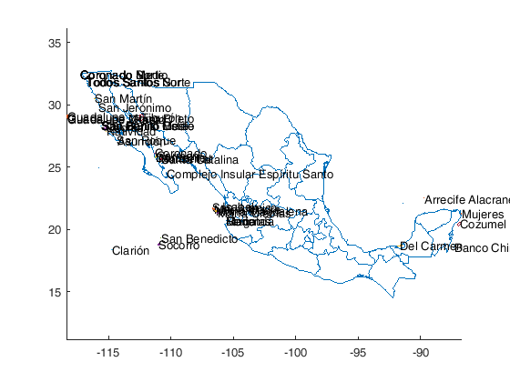
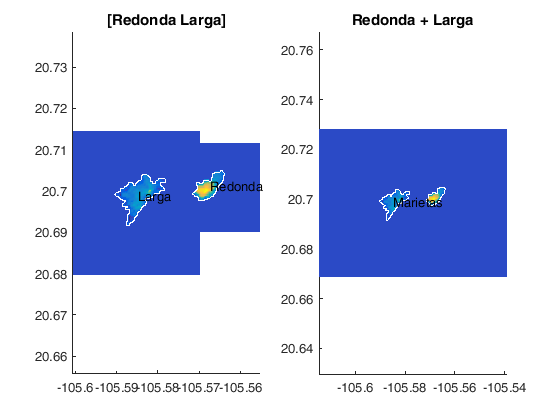
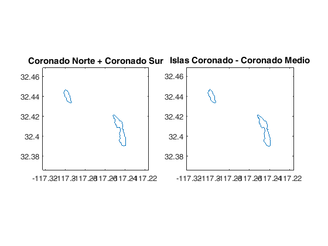
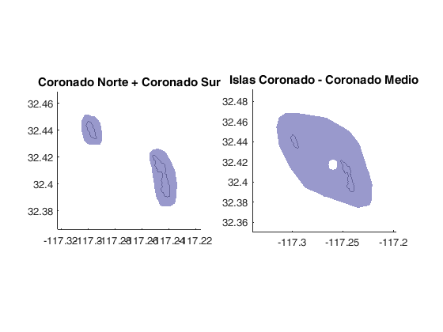
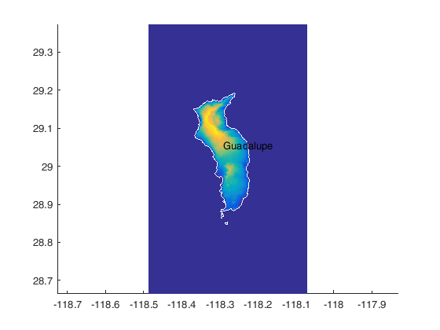
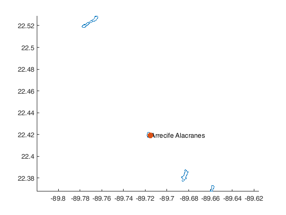
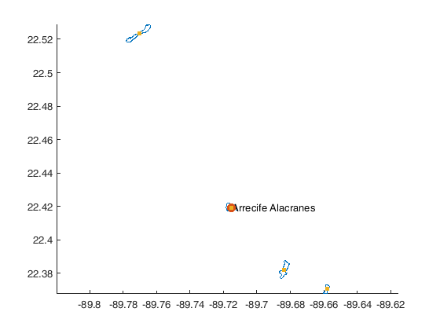

Demostración de la clase Insular
Ejemplos sobre uso de clase insular
Contents
Inicialización
Limpia la memoria y actualiza toolbox que contiene clase insular
updateToolbox('\\EVARISTO-PC\islas'), refreshPath clear, close all, clc
Removiendo el contenido de C:\Users\evaro\Documents\MATLAB\library\islas Se actualizaron las líneas de costa Se actualizaron las demostraciones Se actualizaron las funciones principales Se actualizaron las clases Se actualizaron los datos JSON ÉXITO: Se actualizó islas desde \\EVARISTO-PC\islas
Todos
figure, hold on
plotMexico
todas = listIslands;
Isla = insular(todas);
plot(Isla)

Aritmética de islas (Teoría de conjuntos)
Un objeto de la clase insular representa un archipiélago. Utilizando el lenguaje de teoría de conjuntos aquí definimos un archipiélago como un conjunto de islotes, e islote como un elemento de un archipiélago. (La palabra isla no está definida en el contexto de esta clase.)
clear A = insular('redonda'); B = insular('larga'); C = [A B]; D = A + B; disp('A =') disp(A) disp(' ') disp('B =') disp(B) disp(' ') disp('[A B] =') disp(C) disp(['[A B] es de tamaño ' num2str(size(C,1)) 'x' num2str(size(C,2))]) disp(['[A B] tiene [' num2str([C.nIslotes]) '] islotes']) disp(' ') disp('A + B =') disp(D) disp(['A + B es de tamaño ' num2str(size(D,1)) 'x' num2str(size(D,2))]) disp(['A + B tiene [' num2str([D.nIslotes]) '] islotes']) disp(' ')
A =
insular with properties:
id: 'redonda'
nombre: 'Redonda'
Margen: [1x1 struct]
Islote: [1x1 islet]
DEM: []
Costa: [1x1 struct]
ejes: [-105.5787 -105.5550 20.6897 20.7118]
nIslotes: 1
PuntoMedio: [1x1 struct]
Recuadro: [1x1 struct]
B =
insular with properties:
id: 'larga'
nombre: 'Larga'
Margen: [1x1 struct]
Islote: [1x1 islet]
DEM: []
Costa: [1x1 struct]
ejes: [-105.6008 -105.5696 20.6797 20.7146]
nIslotes: 1
PuntoMedio: [1x1 struct]
Recuadro: [1x1 struct]
[A B] =
Archipiélagos:
redonda
larga
1x2 insular array with properties:
id
nombre
Margen
Islote
DEM
Costa
ejes
nIslotes
PuntoMedio
Recuadro
[A B] es de tamaño 1x2
[A B] tiene [1 1] islotes
A + B =
insular with properties:
id: 'marietas'
nombre: 'Marietas'
Margen: [1x1 struct]
Islote: [1x2 islet]
DEM: []
Costa: [1x1 struct]
ejes: [-105.6146 -105.5390 20.6688 20.7282]
nIslotes: 2
PuntoMedio: [1x1 struct]
Recuadro: [1x1 struct]
A + B es de tamaño 1x1
A + B tiene [2] islotes
figure subplot(1,2,1), hold on pcolor(C) plot(C,'w') title('[Redonda Larga]') subplot(1,2,2), hold on pcolor(D) plot(D,'w') title('Redonda + Larga')

clear A = insular('coronadonorte')+insular('coronadosur'); B = insular('coronado')-insular('coronadomedio'); disp('(Coronado Norte + Coronado Sur) == (Islas Coronado - Coronado Medio):') disp(A==B) figure subplot(1,2,1) plot(A) ejes = A.ejes; axis(ejes) title('Coronado Norte + Coronado Sur') subplot(1,2,2) plot(B) axis(ejes) title('Islas Coronado - Coronado Medio')
(Coronado Norte + Coronado Sur) == (Islas Coronado - Coronado Medio):
1

[fA,vA] = poly2fv(A.Margen.longitud,A.Margen.latitud); [fB,vB] = poly2fv(B.Margen.longitud,B.Margen.latitud); figure subplot(1,2,1), hold on patch('Faces',fA,'Vertices',vA,'FaceColor',[.6 .6 .8],'EdgeColor', 'none') plot(A,'color',[.4 .4 .6]) axis(A.ejes) title('Coronado Norte + Coronado Sur') subplot(1,2,2), hold on patch('Faces',fB,'Vertices',vB,'FaceColor',[.6 .6 .8],'EdgeColor', 'none') plot(B,'color',[.4 .4 .6]) axis(B.ejes) title('Islas Coronado - Coronado Medio')

Ejemplo de graficado
Gargamos Isla Guadalupe
Isla = insular('guadalupe')
Isla =
insular with properties:
id: 'guadalupe'
nombre: 'Guadalupe'
Margen: [1x1 struct]
Islote: [1x5 islet]
DEM: []
Costa: [1x1 struct]
ejes: [-118.4859 -118.0711 28.6653 29.3718]
nIslotes: 5
PuntoMedio: [1x1 struct]
Recuadro: [1x1 struct]
Graficamos su mapa de elevación y línea de costa
figure, hold on pcolor(Isla); plot(Isla,'color','w');

Graficado de punto medio de un archipiélago y punto medio de sus islotes
Primero cargamos Arrecife Alacranes y vemos que tiene cuatro islotes
Isla = insular('alacranes'); disp([Isla.nombre ' contiene ' num2str(Isla.nIslotes) ' islotes'])
Arrecife Alacranes contiene 4 islotes
Luego grafiquemos el archipiélago y su punto medio
figure, hold on plot(Isla) plot(Isla.PuntoMedio.longitud,Isla.PuntoMedio.latitud,'.','markersize',30);

Por último graficamos el punto medio de cada islote
PuntoMedio = [Isla.Islote.PuntoMedio]; lat = [PuntoMedio.latitud]; lon = [PuntoMedio.longitud]; plot(lon,lat,'.','markersize',15);
